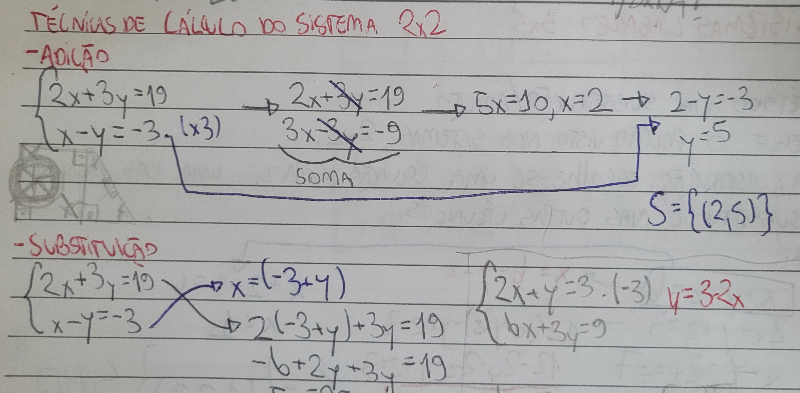

|
O método da adição (também conhecido como método da soma e subtração) é outro procedimento amplamente utilizado. Nesse caso, as equações são manipuladas para remover uma das variáveis, utilizando a soma ou subtração das equações. Esse procedimento torna o sistema mais simples e, tal como no método da substituição, possibilita a determinação dos valores das incógnitas. Esse método é eficaz quando os coeficientes das variáveis podem ser facilmente ajustados para se cancelarem mutuamente. Ademais, há o método da matriz (também conhecido como método de escalonamento de Gauss), amplamente utilizado em sistemas de maior escala. Nesse cenário, o sistema é organizado em formato de matriz, utilizando operações elementares nas linhas até alcançar uma forma simplificada, a qual possibilita a identificação direta das soluções. Essa perspectiva é essencial em álgebra linear, pois fornece uma visão mais estruturada e é facilmente generalizável para sistemas com muitas variáveis. |
 |